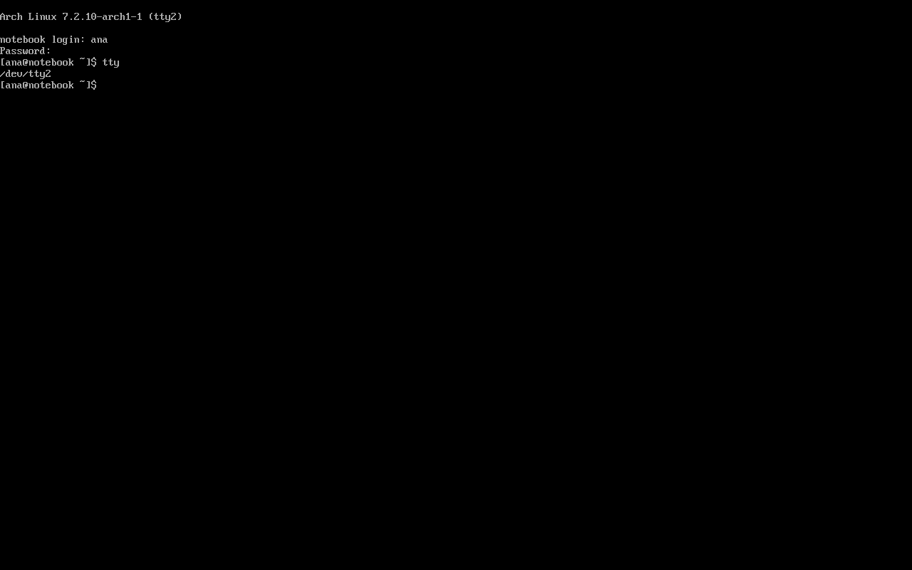
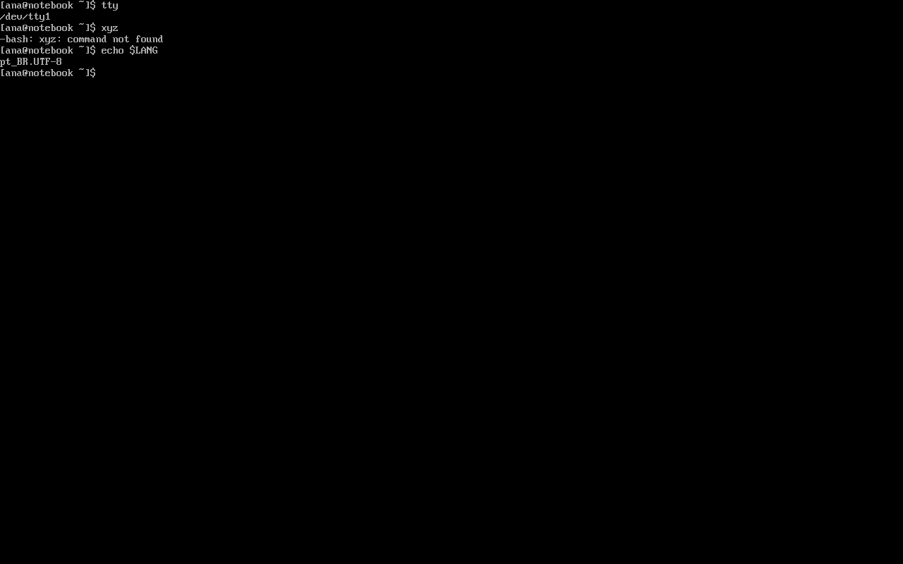

Arch Terminal
No Arch, o terminal não é um recurso avançado: é a porta de entrada. A instalação é feita nele, o primeiro boot termina nele e, até você instalar um desktop, é tudo o que existe. Esta aula ensina a ler o prompt do Arch, mostra qual shell você está usando, o que são os consoles de texto (TTYs) e quais programas de terminal existem quando há interface gráfica.
- A diferença entre terminal, console, TTY e shell.
- Ler o prompt
[ana@notebook ~]$parte por parte, e oroot@archiso ~ #do pendrive de instalação. - Por que o Bash é o shell padrão, e o que fazem o
.bashrce o.bash_profile. - Como trocar de console com Ctrl+Alt+F2 e entrar em modo texto.
- Os emuladores de terminal mais comuns (Konsole, GNOME Console, Alacritty, kitty…).
Terminal, console, TTY e shell
Quatro palavras que todo mundo mistura. Pense num balcão de atendimento:
| Palavra | Na analogia | No computador |
|---|---|---|
| Shell | O atendente que entende o seu pedido | O programa que lê o comando, interpreta e executa. No Arch, o Bash. |
| Terminal | O balcão onde você fala com o atendente | A janela (ou a tela) onde você digita e lê as respostas. |
| Console / TTY | O balcão fixo, que existe mesmo sem energia na loja | A tela de texto do próprio sistema, sem interface gráfica. O nome vem dos antigos teletypewriters (TTY). O Linux oferece vários: tty1, tty2… |
| Emulador de terminal | Um balcão portátil, montado dentro da loja decorada | Um programa gráfico que "imita" um terminal numa janela: Konsole, GNOME Console, Alacritty… |
Em qualquer um deles, quem trabalha é o mesmo shell. Os comandos que você aprende no console servem igualzinho numa janela do Konsole.
O prompt do Arch, parte por parte
Quando o shell está pronto para receber um comando, ele mostra o prompt. O do Arch é este:
- [
- Abre o colchete: só enfeite, para separar o prompt do comando.
- ana
- O usuário que está usando o shell (no
PS1,\u, de user). - @notebook
- "Em" (at) qual máquina: o nome do computador (
\h, de host), o mesmo do arquivo/etc/hostname. - ~
- A pasta atual (
\W). O~quer dizer "a sua pasta pessoal",/home/ana. Fora dela, aparece só o nome da pasta, não o caminho inteiro. - ]$
- Fecha o colchete. O
$diz "usuário comum"; para o root ele vira#(\$).
De onde vem esse desenho? Do arquivo ~/.bashrc, que o Arch coloca na pasta de cada usuário novo:
$ cat ~/.bashrc # # ~/.bashrc # # If not running interactively, don't do anything [[ $- != *i* ]] && return alias ls='ls --color=auto' alias grep='grep --color=auto' PS1='[\u@\h \W]\$ ' « o desenho do prompt: [usuário@máquina pasta]$
Veja o prompt acompanhando a Ana pelas pastas (sessão real na VM):
$ cd Documentos $ cd projetos « dentro de /home/ana/Documentos/projetos: aparece só "projetos" $ cd /etc $ cd « cd sozinho volta para a pasta pessoal (~)
O \W mostra só o último pedaço do caminho. Em [ana@notebook projetos]$, você pode estar em ~/Documentos/projetos ou em /srv/projetos. Na dúvida, pergunte com pwd (print working directory). O Debian e o Ubuntu usam \w minúsculo, que mostra o caminho inteiro (ana@notebook:~/Documentos/projetos$); se preferir assim, troque \W por \w no seu .bashrc. Personalizar o prompt é assunto do Guia Bash: Personalizar o Prompt (PS1).
Os três prompts que você vai ver neste guia
| Prompt | Quem / onde | Quando aparece |
|---|---|---|
[ana@notebook ~]$ | A Ana, no sistema instalado | Quase sempre |
[root@notebook ~]# | O root, no sistema instalado | Depois de sudo -i ou su - (veja sudo, root e Usuários) |
root@archiso ~ # | O root, no ambiente live do pendrive | Só durante a instalação |
O prompt do ambiente live: root@archiso ~ #
Quando você dá boot pelo pendrive de instalação, o desenho é outro, e não é por acaso: o ambiente live usa outro shell, o zsh, com uma configuração colorida própria (a do projeto grml). archiso é o nome da máquina no live, e o # no fim indica root: lá você já entra como administrador, sem senha.

root no tty1 e o prompt do zsh, root@archiso ~ #.Tudo o que você digita no live usa o zsh, mas os comandos da instalação funcionam igual no Bash. Depois do primeiro boot do sistema instalado, o prompt volta a ser o do Bash. A aula O Ambiente Live explica essa tela linha por linha.
O Bash é o shell padrão
O shell de cada usuário fica anotado no arquivo /etc/passwd, no último campo. O getent mostra a linha da Ana:
$ echo $SHELL /bin/bash « o shell de login da Ana $ getent passwd ana ana:x:1000:1000::/home/ana:/bin/bash « último campo: o shell $ bash --version | head -2 GNU bash, versão 5.3.20(1)-release (x86_64-pc-linux-gnu) Copyright (C) 2025 Free Software Foundation, Inc. $ pacman -Qo /usr/bin/bash /usr/bin/sh /usr/bin/bash pertence a bash 5.3.20-1 /usr/bin/sh pertence a bash 5.3.20-1 « no Arch, o sh também é o Bash $ ls -l /usr/bin/sh lrwxrwxrwx 1 root root 4 15 set 16:47 /usr/bin/sh -> bash
Repare na última linha: no Arch, /usr/bin/sh é só um atalho (link simbólico) para o bash. No Debian e no Ubuntu, o sh é outro programa (o dash). Por isso um script que começa com #!/bin/sh e usa recursos do Bash funciona no Arch e pode falhar no Ubuntu.
A lista de shells permitidos para login fica em /etc/shells:
$ cat /etc/shells # Pathnames of valid login shells. # See shells(5) for details. /bin/sh /bin/bash /bin/rbash /usr/bin/sh /usr/bin/bash /usr/bin/rbash /usr/bin/systemd-home-fallback-shell /usr/bin/git-shell
E o zsh e o fish?
Estão nos repositórios oficiais, mas não vêm instalados:
$ pacman -Q zsh fish erro: o pacote "zsh" não foi encontrado erro: o pacote "fish" não foi encontrado $ pacman -Si zsh fish | grep -E "^(Nome|Versão|Descrição)" Nome : zsh Versão : 5.9.2-1 Descrição : A very advanced and programmable command interpreter (shell) for UNIX Nome : fish Versão : 4.9.3-1 Descrição : Smart and user friendly shell intended mostly for interactive use
Para trocar de shell, você instalaria o pacote (sudo pacman -S zsh) e mudaria o shell de login com chsh -s /usr/bin/zsh, que pede a sua senha e vale a partir do próximo login (ilustrativo: a VM continua no Bash). Este guia usa o Bash em tudo; os scripts de sistema também.
.bashrc e .bash_profile
O useradd -m copia três arquivos para a pasta de cada usuário novo. Dois deles importam aqui:
$ cat ~/.bash_profile # # ~/.bash_profile # [[ -f ~/.bashrc ]] && . ~/.bashrc « se o .bashrc existe, leia-o também
| Arquivo | Lido quando | Use para |
|---|---|---|
~/.bash_profile | Num login (no TTY, por SSH, com su -) | Variáveis de ambiente (export EDITOR=nano) |
~/.bashrc | Em todo shell interativo (cada janela de terminal nova) e, via .bash_profile, no login | Aliases, prompt, funções |
~/.bash_logout | Ao sair de um shell de login | Limpezas (quase ninguém mexe) |
A ordem completa em que o Bash lê esses arquivos está no Guia Bash: Arquivos de Inicialização.
ll
O .bashrc do Arch tem só dois aliases: ls e grep com cores. Quem vem do Ubuntu sente falta do ll:
$ type ls ll ls está apelidada para `ls --color=auto' bash: type: ll: não encontrado
Se quiser, acrescente alias ll='ls -l' ao seu ~/.bashrc. O Guia Bash: alias explica como.
Missão: entre em Documentos e depois em projetos, olhando o prompt mudar a cada cd. Quando estiver lá, confirme o caminho inteiro com pwd. Experimente também echo $SHELL e type ls ll.
Os consoles de texto (TTY)
Mesmo com interface gráfica, o Linux mantém vários consoles de texto prontos, cada um com o seu login. Você troca entre eles pelo teclado:
| Atalho | Vai para |
|---|---|
| Ctrl+Alt+F1 | tty1: onde o Arch mostra o login no primeiro boot (e onde, depois, costuma rodar o login gráfico) |
| Ctrl+Alt+F2 … F6 | tty2 a tty6: consoles de texto extras |
| Alt+← / Alt+→ | O console anterior / o próximo (quando você já está num console de texto) |

tty2 ("Arch Linux 7.2.10-arch1-1 (tty2)"), o login da ana (a senha não aparece) e o comando tty respondendo /dev/tty2. Captura real.
command not found em inglês, mesmo com LANG=pt_BR.UTF-8. O login começa sem idioma, e quem define o LANG é o /etc/profile, quando o Bash já escolheu o idioma das próprias mensagens. Os outros programas (como o nmtui e o nano) já abrem em português. Num terminal gráfico, o idioma vem desde o início e o Bash fala português. Captura real.Para que serve? Para quando a interface gráfica travou ou não sobe: num console de texto você entra, vê o que aconteceu e conserta. A aula Quando o Sistema Trava usa isso.
O VirtualBox "segura" o Ctrl+Alt+F2 para o seu computador. Dentro da VM, use a tecla hospedeira (normalmente o Ctrl da direita) + F2.
O login em modo texto
A VM do guia não tem interface gráfica, como todo Arch recém-instalado. No primeiro boot, depois das mensagens de inicialização, a tela fica assim:

tty1.A primeira linha não é inventada pelo login: ela vem do arquivo /etc/issue, cujos códigos são trocados na hora:
$ cat /etc/issue
\S{PRETTY_NAME} \r (\l)
- \S{PRETTY_NAME}
- O nome do sistema, tirado do
/etc/os-release:Arch Linux. - \r
- A versão do kernel:
7.2.10-arch1-1(a mesma douname -r). - (\l)
- O console em que você está:
(tty1).
- Em
notebook login:, digite o nome do usuário (ana) e aperte Enter. - Em
Senha:, digite a senha e aperte Enter. Nada aparece enquanto você digita, nem asteriscos: é proteção, não defeito. - Aparece o prompt
[ana@notebook ~]$. Pronto: é o mesmo Bash de sempre. - Para sair, digite
exit(ou Ctrl+D numa linha vazia). O login volta a aparecer.
O comando tty diz em que terminal você está. Por SSH (como nesta sessão na VM), a resposta é um pseudoterminal; num console de texto, seria /dev/tty1, /dev/tty2…
$ tty /dev/pts/1 « pts = pseudoterminal: uma janela, uma sessão SSH
Terminais gráficos
Depois de instalar um desktop (Instalar um Desktop), você abre o terminal numa janela. Cada ambiente traz o seu, e há outros independentes. Todos estão nos repositórios oficiais; as versões abaixo são as de outubro de 2026, consultadas com pacman -Si:
| Pacote | Versão | Vem com / para quem |
|---|---|---|
konsole | 26.08.2 | KDE Plasma. Abas, perfis, divisão da janela. |
gnome-console | 51.0 | GNOME (o "Console", simples). Faz parte do grupo gnome. |
gnome-terminal | 3.60.0 | O terminal clássico do GNOME, com mais opções. |
xfce4-terminal | 1.2.0 | Xfce. Leve e completo. |
foot | 1.28.0 | Wayland, minimalista; comum com Sway. |
alacritty | 0.17.0 | Rápido (usa a placa de vídeo), configurado por arquivo. |
kitty | 0.49.2 | Rápido, com abas, divisões e imagens no terminal. |
ghostty | 1.3.1 | Moderno, rápido, com visual nativo. |
wezterm | 20240203 (+ git) | Rápido, com multiplexador embutido, configurado em Lua. |
No terminal, Ctrl+C não copia: ele interrompe o comando que está rodando. Para copiar e colar, use Ctrl+Shift+C e Ctrl+Shift+V (na maioria dos emuladores), ou selecione o texto com o mouse e cole com o botão do meio.
Quando não funciona
$ sl bash: sl: comando não encontrado $ echo $? 127
Causa: o nome está errado (aqui, ls digitado ao contrário) ou o programa não está instalado. No Arch, muita coisa não vem no sistema mínimo.
Como resolver: confira a grafia. Se estiver certa, descubra qual pacote tem o comando com pacman -F nome e instale-o (veja pacman: o Básico).
Causa: é de propósito: nem o login, nem o sudo, nem o passwd mostram o que você digita.
Como resolver: digite com calma e aperte Enter. Se errou, apague tudo com Ctrl+U e comece de novo.
Causa: não há interface gráfica instalada (ou ela não subiu).
Como resolver: entre com o seu usuário. Se você nunca instalou um desktop, veja Instalar um Desktop; se ele existia e parou de aparecer, veja Quando o Sistema Trava e os erros do boot com journalctl -b -p 3.
Causa: o programa de VM entrega o atalho ao seu computador, não à VM.
Como resolver: no VirtualBox, use a tecla hospedeira (Ctrl direito) + F2; no GNOME Boxes e no virt-manager, use o menu "Enviar tecla".
Referência
| Comando / arquivo | Para quê |
|---|---|
echo $SHELL | Mostra o seu shell de login |
pwd | Mostra o caminho completo da pasta atual |
tty | Mostra em que terminal você está |
cat /etc/shells | Lista os shells de login permitidos |
chsh -s /usr/bin/zsh | Troca o shell de login (depois de instalar o pacote) |
~/.bashrc | Prompt (PS1), aliases, funções |
~/.bash_profile | Variáveis de ambiente do login; lê o .bashrc |
/etc/issue | O texto acima do login: nos consoles |
| Ctrl+Alt+F1…F6 | Troca de console (TTY) |
| Ctrl+Shift+C / V | Copiar / colar no terminal gráfico |
Exercícios
1. A Ana está em /home/ana/Documentos/projetos. Como fica o prompt padrão do Arch?
2. Por que o prompt do pendrive de instalação (root@archiso ~ #) é diferente?
3. No Arch, o que é o /usr/bin/sh?
4. Num terminal gráfico, você apertou Ctrl+C para copiar um texto, mas o comando que estava rodando parou. Por quê?
5. Complete a linha do ~/.bashrc que desenha o prompt padrão do Arch:
6. Complete o comando que mostra o caminho completo da pasta atual:
Resumo
- Shell (o Bash) interpreta os comandos; terminal, console (TTY) e emulador de terminal são onde você digita.
- Prompt do Arch:
[usuário@máquina pasta]$, com só o nome da pasta (\W);#para o root. - No live da instalação, o prompt é
root@archiso ~ #, do zsh. - O Bash é o shell padrão (e o
shdo Arch é o próprio Bash); zsh e fish são opcionais. .bashrcpara aliases e prompt;.bash_profilepara o login. O Arch não traz oll.- Ctrl+Alt+F2 abre um console de texto; o login em modo texto não mostra a senha.
Este guia ensina o Arch e usa o Bash como ferramenta. Para aprender o Bash a fundo (variáveis, aspas, pipes, scripts, o prompt, o histórico), siga o Guia Bash, com o mesmo estilo e um terminal simulado próprio.
Na Arch Wiki: o shell está em Bash e em Command-line shell (em português); o prompt, em Bash/Prompt customization; os consoles de texto, em Linux console e Getty (em português); o zsh, em Zsh; e a lista de terminais gráficos, em List of applications/Utilities — Terminal emulators.